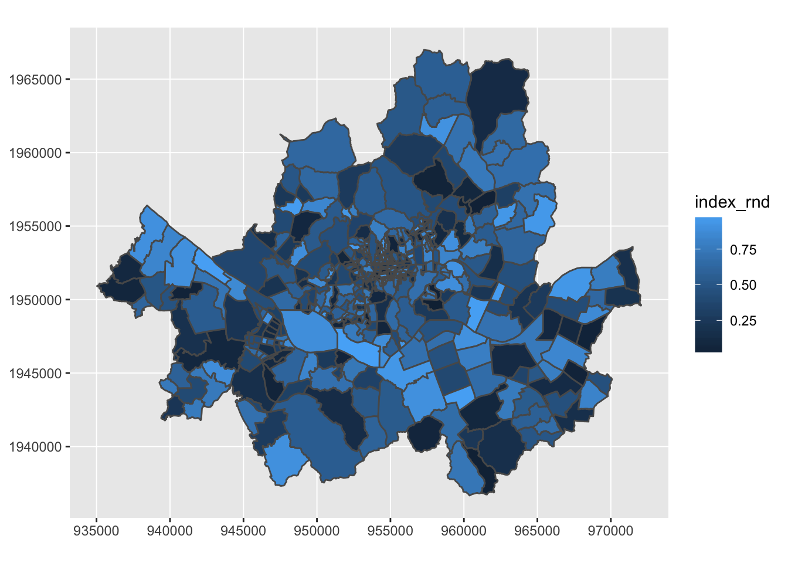

Motivation
일반인이 지도로 할 수 있는 가장 쉬운 시각화는? 누구나 한번은 봤음직 한 단계구분도(cholopleth map)다. 이 작업을 직접 하기 위해 필요한 요소들부터 따져보자.
- 지도를 그리기 위한 공간 데이터
- 단계로 표현될 변수 (투표율, 소득 등등)
- 1,2를 연결할 방법
- 1,2를 지도로 구현할 방법
상당히 직관적인 까닭에 단계구분도는 많이 활용된다. 하지막 막상 단계구분도를 생성하고자 할 때 작업이 그리 간단하지 않다. R로 이 작업을 어떻게 수행할 수 있을까? 단계구분도를 생성하는 것 자체가 그리 난이도가 높은 작업은 아니다. 오픈소스툴 답게 몇 가지 서로 다른 방법들이 R에 존재한다. 다만 이 작업을 일관되게, 즉 tidyverse의 틀 내에서 할 수 없을까?
한 가지 다른 문제도 있다. 사실 ggplot2에서 지도 데이터의 시각화가 생각 만큼 쉽게 구현되지는 않는다. 이는 대체로 지도 데이터를 구현하는 R 패키지의 데이터 표현 양식에서 비롯된다. 하지만 뜻이 있는 곳에 길이 있다고 하지 않는가!
이제 소개할 sf패키지가 이러한 문제점을 해소하기 위해서 제작되었다.
sf package
sf는 ’simple feature’를 뜻한다. ’simple feature’는 실세계(real world)의 대상을 컴퓨터를 통해 어떻게 표현할지에 관한 표준이라고 한다.1 자세한 내용을 적어봐야 밑지는 장사이니 이쯤에서 접어 두자. 문서의 설명에 따르면, R에서도 활용하는 공간 데이터베이스 및 라이브러리 그리고 표준이 대부분 sf와 호환되어 잘 작동한다. 단계구분도를 R을 통해 그려본 사람들은 알겠지만, 단계구분도 그리기 위해서는 방법에 따라 sp, rgdal, rgeos 등의 패키지를 제각각 불러와야 하는 경우가 많다. sf패키지를 쓰면 그럴 필요가 없다는 이야기다.2 sf 패키지로 할 수 있는 일이야 훨씬 많겠으나 단계구분도를 위해서 알아야 하는 건 몇 개 안된다. 글 앞에서 지적했던 네 가지 요소를 다시 챙겨보자.
- 지도 공간 데이터 (예를 들어, shp 파일)
- 단계로 표현할 변수
- How?
- How?
보통 R에서 shp 파일을 sp 패키지를 통해 읽으면 꽤 복잡한 포맷으로 R에 기록된다. 데이터를 이해하고 필요한 것을 추출하기 위해서 한참 들여다 봐야 한다. 1, 2를 연결하기 위해서는 지도 공간 데이터를 R의 데이터프레임으로 풀어야 한다. fortify라는 ggplot2의 함수를 써서 shp 파일의 데이터들을 data.frame으로 풀어낼 수 있다.3 하지만, 몇 가지 문제가 있다. 우선, fortify 함수가 그리 직관적이지 않다. 쓰고도 뭔가 찜찜함이 남는 달까. sf 패키지는 shp 파일의 지도 관련 데이터를 바로 data.frame으로 풀어준다. 이것만으로도 큰 도약이다.
이제 이렇게 지도 데이터가 data.frame으로 풀리면 3번이 자연스럽게 해소된다. 필요한 변수를 수집해서 left_join 같은 명령어로 여기에 붙여주면 그만이다.
남은 것은 시각화인데, 편리하게도, ggplot2의 베타버전에서 geom_sf라는 문법을 통해서 sf 정보를 담고 있는 data.frame을 지도로 바로 쏴준다. 어이 없을 만큼 편리하다! 게다가 ggplot2을 쓰는 만큼 손쉬운 커스터마이제이션이 가능하다.
A super simple example
개념이야 아무리 떠들어봐야 소용없다. 보통 천조국 지도는 (서럽게도?) 패키지 안에 들어 있으니, 우리는 패키지에 포함되어 있지 않은 헬조선 지도로 몹시 간단한 사례를 하나 만들어 보자.
shp 파일 구하기
고맙게도 shp 파일로 가지런히 만들어진 행정구역 파일을 여기에서 구할 수 있다. 시도, 읍면동, 리까지 구할 수 있으니, 헬조선의 단계구분도를 그리는 데 크게 부족함은 없을 것이다. 일단 다운받아서 압축을 푼다.
sf 패키지
필요한 패키지부터 설치/로딩하자.
#install.packages('sf')
#install.packages('tidyverse', dependencies = T)
#devtools::install_github("tidyverse/ggplot2")
library('sf')
library('tidyverse')
library('ggplot2')최초 인스톨할 때 위의 주석(#)은 빼고 돌려야 한다. 이미 인스톨되어 있다면 주석을 그대로 살려두면 된다.
다른 명령어들은 평범하지만, ggplot2의 경우 geom_sf를 이용하기 위해서는 베타 버전을 인스톨해야 한다. 이미 인스톨되어 있더라도 그냥 devtools를 써서 한번 더 인스톨 해주자. 어쨌든, 중요한 것은 잘 인스톨하고 잘 불러들이는 것이다.
st_read("YOUR_LOCATION/YOUR_SHPFILE.shp") -> tdf st_read는 적절한 위치(YOUR_LOCATION)에 있는 공간 파일(YOUR_SHPFILE.shp)을 로딩하기 위한 명령어다. 앞서 다운로드한 파일에서 읍면동에 해당하는 TL_SCCO_EMD.shp파일을 로딩해 tdf라는 embedded data.frame를 생성했다. 이 data.frame의 컬럼은 4개다.
Observations: 5,039
Variables: 4
$ EMD_CD <fctr> 11110101, 11110102, 11110103, 11110104, 11110105, 11110106, 1...
$ EMD_ENG_NM <fctr> Cheongun-dong, Singyo-dong, Gungjeong-dong, Hyoja-dong, Chang...
$ EMD_KOR_NM <fctr> u<U+00BF><U+ED7F>, <U+00BD><U+0171><U+00B3><U+00B5><U+00BF>, ...
$ geometry <simple_feature> MULTIPOLYGON (((953700.0221..., MULTIPOLYGON (((953...EMD_CD는 읍면동의 코드, EMD_ENG_NM은 영문 이름, 그리고 EMD_KOR_NM은 한글 이름이다. 마지막으로 geometry는 simple feature로 해당 행정구역의 지도 모양을 (복잡한) 멀티폴리곤 데이터로 담고 있다. 이 녀석이 지도를 그릴 때 활용된다. data.frame의 용량이 커지는 것도 이 녀석 때문이다.
tdf 객체는 data.frame다. 데이터를 조작할 필요가 있으면 이 녀석 위에서 하면 된다. 위의 파일은 윈도에서 불러온 것인데, (언제나 그렇듯이 빌어먹을 마소의 고집 때문에 고통받는 헬조선 사람들의 고질적인 문제!) 인코딩 때문에 위에 보는 것처럼 한글 이름이 <U+00BF>와 같이 바이트 코드로 노출되어 있다. 이걸 고쳐보자.
tdf %>%
as.tibble %>%
mutate(
EMD_CD = as.character(EMD_CD),
EMD_ENG_NM = as.character(EMD_ENG_NM),
EMD_KOR_NM = iconv(EMD_KOR_NM, localeToCharset(), "UTF-8")
) -> tdf_EMDtdf_EMD를 살펴보자.
Classes ‘tbl_df’, ‘tbl’ and 'data.frame': 5039 obs. of 4 variables:
$ EMD_CD : chr "11110101" "11110102" "11110103" "11110104" ...
$ EMD_ENG_NM: chr "Cheongun-dong" "Singyo-dong" "Gungjeong-dong" "Hyoja-dong" ...
$ EMD_KOR_NM: chr "청운동" "신교동" "궁정동" "효자동" ...
$ geometry :sfc_MULTIPOLYGON of length 5039; first list element: List of 1
..$ :List of 1
.. ..$ : num [1:377, 1:2] 953700 953694 953691 953690 953688 ...
..- attr(*, "class")= chr "XY" "MULTIPOLYGON" "sfg"마지막으로 단계구분도가 구현될 가상의 변수 하나를 만들어 관찰에 하나씩 붙여 보자. 헬조선 전체를 구현하기에는 용량이 좀 크다. 편의상 서울만 필터링하도록 하겠다. 지도 코드에서 앞 두자리가 \(11\)로 시작하는 것이 서울이다. 물론, 실제 구현에서는 그리고 싶은 지역에 구현하고 싶은 데이터를 구해서 이런 저런 추가 작업 후에 붙이면 되겠다. 여기서는 uniform 랜덤을 생성해서 몹시 성의 없이 갖다 붙였다.
tdf_EMD %>%
filter(substr(EMD_CD, start = 1, stop = 2) == "11") %>%
mutate(index_rnd = runif(n())) -> tdf_seoul visualization with ggplot2
ggplot(tdf_seoul) +
geom_sf(aes(fill = index_rnd))
너무나 간단하지 않은가! 이후에는 취향에 맞게 ggplot2의 문법을 따라서 컬러, 라벨링, 경계선 두께 등을 조정하면 된다. Voila!